Modern architecture of web application
@KonradKokosa
Odrobinę o mnie...

http://blog.kokosa.net
http://tooslowexception.com
https://twitter.com/konradkokosa
Trener, bloger, prelegent, konsultantem, ...
CEO, CTO, CFO @ Gritstep.com
Wprowadzenie
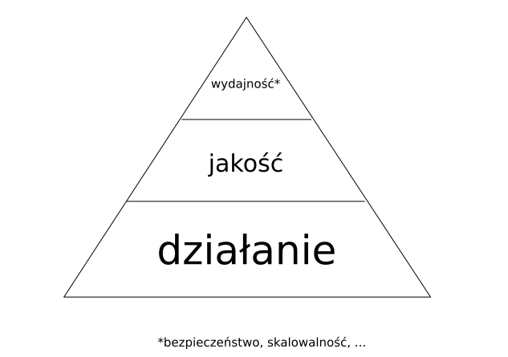
Google Rail


Było...


#01 Monolit


#02 N-tier


#03 Service Oriented Architecture (SOA)

Big Ball of Mud

Architektura:
- ograniczenia naszego umysłu
- zależności
- skalowalność
- ...
Jest...
#04 Hexagonal architecture
aka "Ports and adapters" lub "Onion architecture"
#05 Microservices
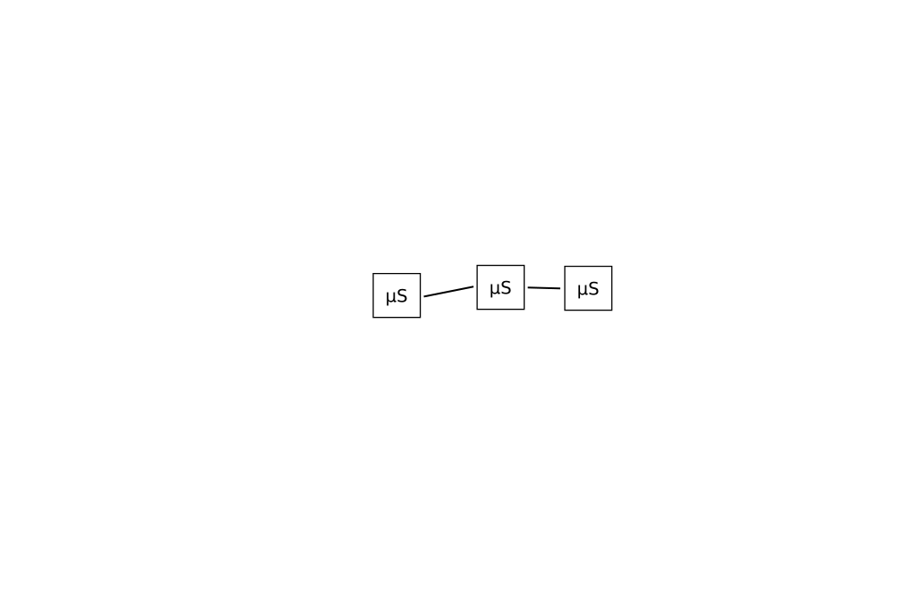
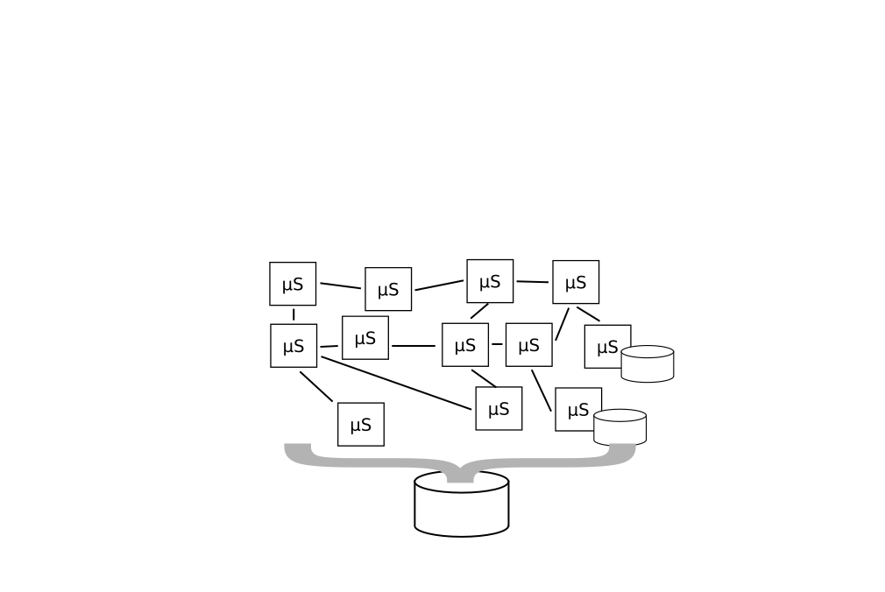
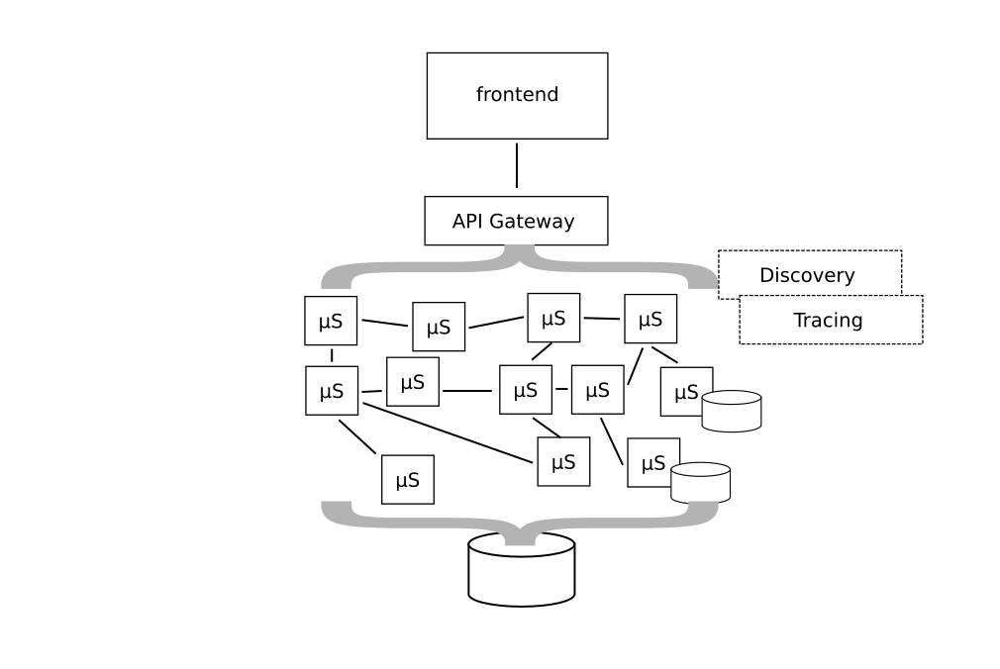
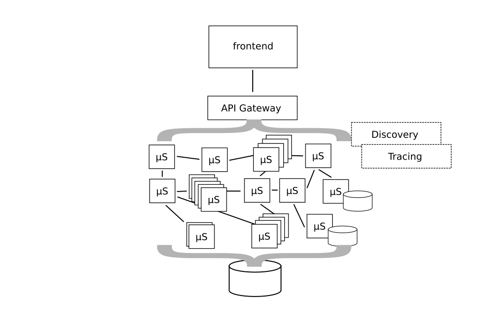


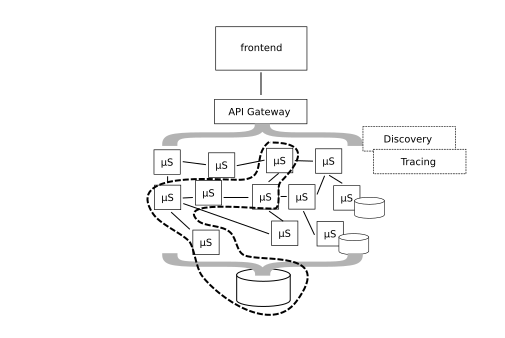
eventual consistencyToolbox
Saga
Saga
- Choreografia - rozproszone podejmowanie decyzji
- Orkiestracja - scentralizowane podejmowanie decyzji
- ...
#06 CQRS

#07 Event sourcing

#08 Reactive architecture (meta)
- Responsive
- Resilient
- Elastic
- Message Driven
#09 Actor model

#10 Lambda architecture

#11 Serverless
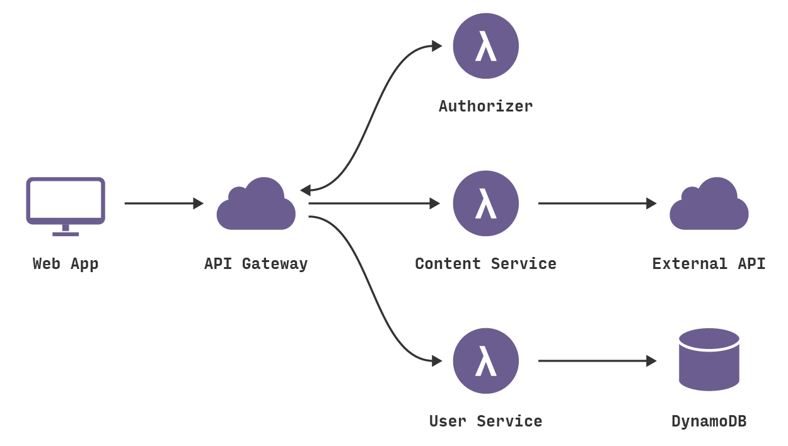
https://blog.fugue.co/2016-05-05-architecting-a-serverless-web-application-in-aws.html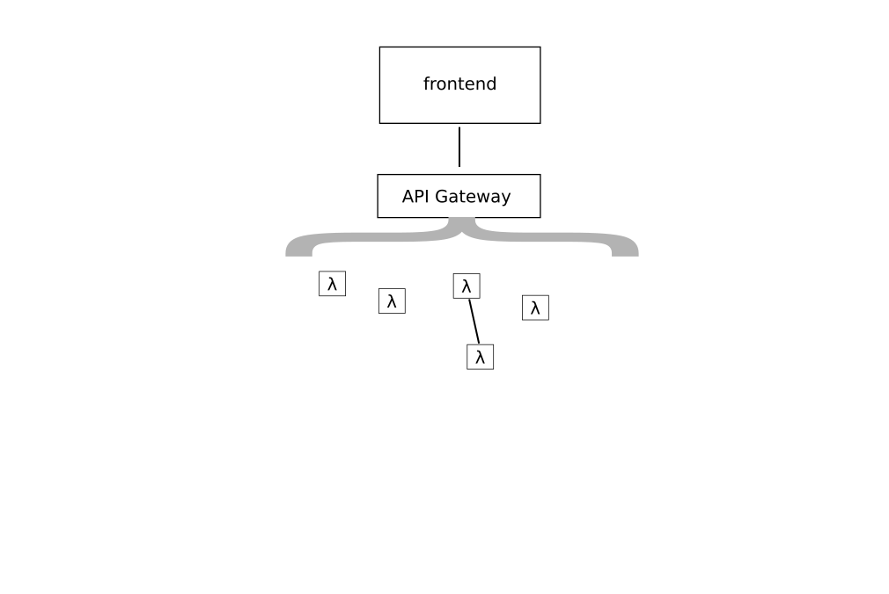
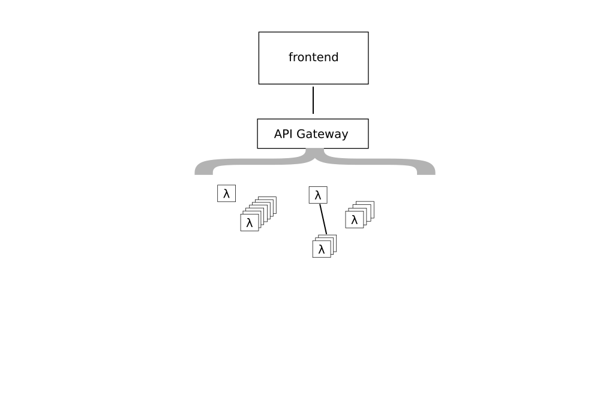
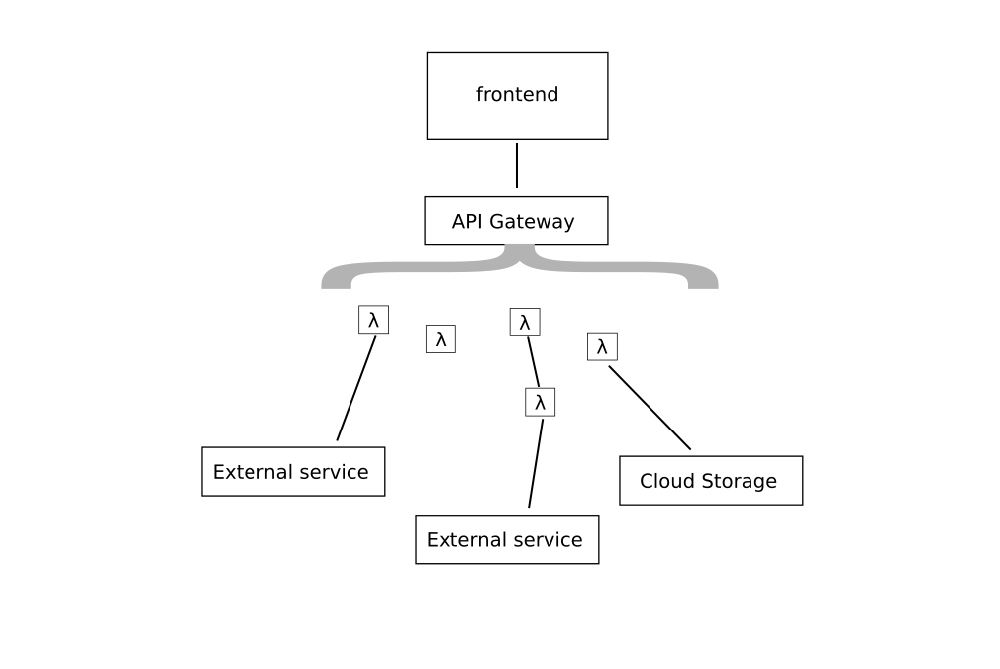
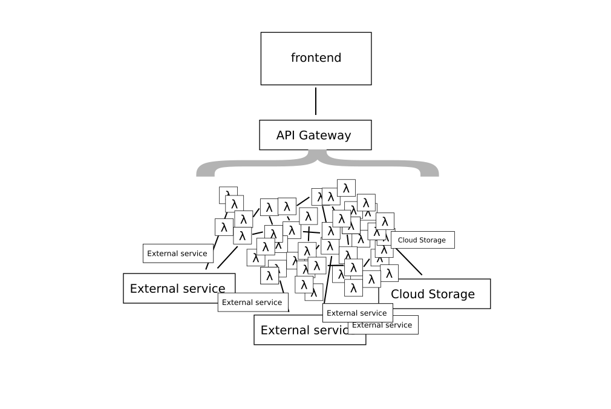
Będzie...?
Strumieniowanie danych
Autonomiczność
Podsumowanie
Zabawki
- #01 Monolit
- #02 N-tier
- #03 Service Oriented Architecture (SOA)
- #04 Hexagonal architecture
- #05 Microservices
- #06 CQRS
- #07 Event sourcing
- #08 Reactive architecture
- #09 Actor model
- #10 Lambda architecture
- #11 Serverless
Dobre intencje

Budujemy katedrę...

Prawo młotka
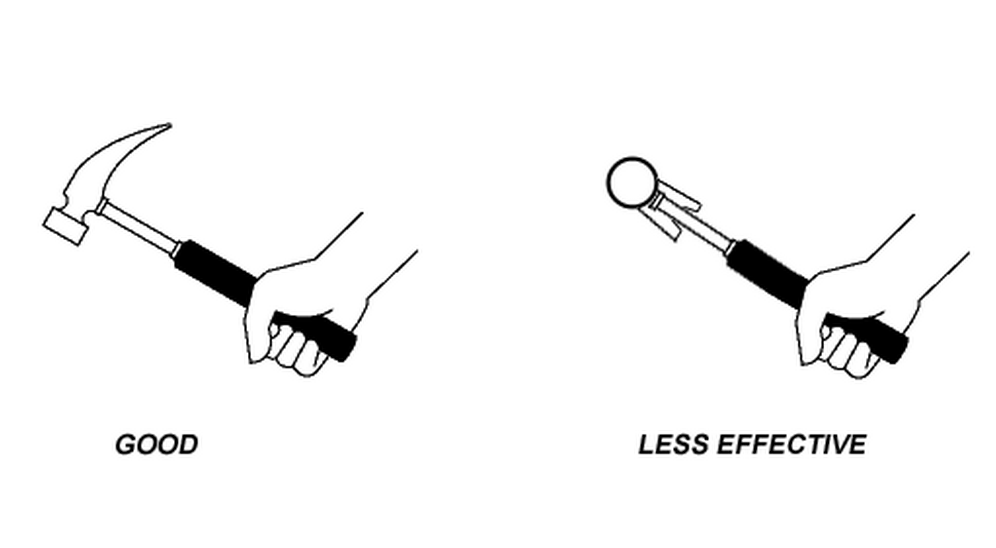
https://en.wikipedia.org/wiki/Law_of_the_instrumentEvolutionary architecture
Jedno jest pewne - nastąpi zmiana
Koniec. Dziękuję!
Pytania?